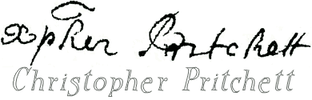

Old Style Handwriting and
Printers’ Ligatures, &c.
“X” is for “Christ”


(From two deed recordings, Richmond County Virginia Deed Book 3, page 57, 1700.)
“To all Christian people for whom this present writing
indented shall come in the year of our Lord God everlasting 1700 I William Smoot Senr
of the Parish of North Farnham in the County of Richmond Gent send greeting Know ...”
These two examples above use the Xp
as an abbreviation for Christ. The Xp is from the Greek chi-rho. There are a number
of variations. Today, we see the X in Xmas
(Christe Mæsse).
|
Old English Examples
About 1,800 years ago in Rome, this symbol was used:
Note:
Scans &c. of the Virginia records provided by Dennis M. Smoot
| |